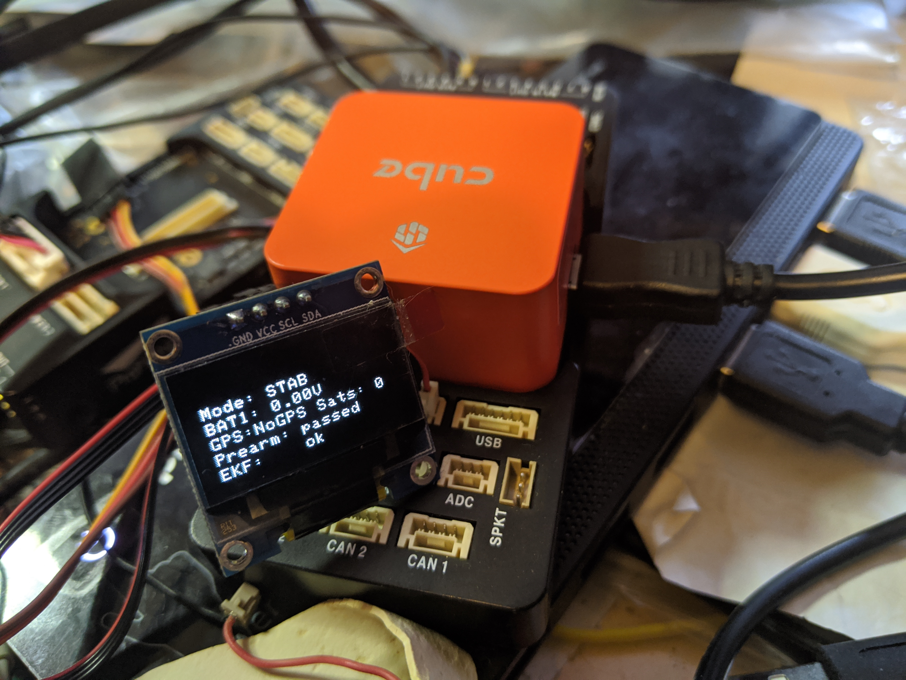
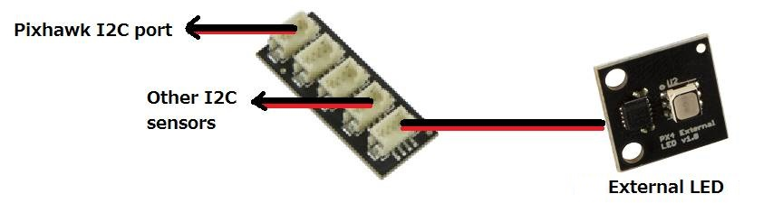

External LEDs¶
An external LED or LED Display can be added by connecting it to the autopilot’s I2C port or, in 4.0 and later versions, if a serially programmed device, via an output using the SERVOx_FUNCTION for that output. DroneCAN LEDs on the CANBUS are also supported (See DroneCAN Setup ).
Note
Note that the same grouping restrictions which apply to setting outputs to different PWM rates and/or DShot, apply to LEDs also since the timer associated with each group of outputs cannot be used for different rates. See also Mixing ESC Protocols
RGB LEDs/Displays with I2C Connection¶
Two types of I2C devices are supported: I2C connected RGB LEDS using an LED driver chip and OLED displays.
RGB LEDs/drivers supported are:
Toshiba LEDs (no longer manufactured)
PCA9685 driver
NCP5623 driver
OLED Displays supported are SSH1106 and SSD1306 with 128x64 pixel displays. See Onboard Display for more information.
{kind=link}
Because most users use an external GPS and Compass module, an I2C splitter is recommended, such as shown below. The NTF_LED_TYPES parameter should be set to the controller type used.
{kind=link}
Serially Connected Devices¶
Currently, ArduPilot supports Neopixel and ProfiLED RGB LED strings. They can be used for NTF notifications from the autopilot on status and warnings like other RGB LEDs, or be programmed in unlimited ways using LUA scripts on the autopilot’s SD card. For use with scripting the output function must be set to a scripting output function (94 - 109) the script then assignees this output to LEDs. See Lua Scripts for more use examples using LUA scripts.
Serial LEDs require a whole pwm group, more information about your autopilot’s PWM groups can be found on it’s hardware page. To check that the desired outputs have been setup correctly look for the PWM types message in your GCS’s messages tab. See GPIOs
Note
Be sure the output is configures as normal PWM instead of a GPIO output. Flight controllers with a IOMCU can only use the AUX outputs for connecting serial LEDs. To check that the desired outputs have been setup correctly look for the PWM types message in your GCS’s messages tab. See GPIOs
NTF LED Meaning¶
The meaning of the colors and flash patterns are shown in LEDs Meaning if the standard default protocol is set for NTF_LED_OVERRIDE.
The brightness and number of LEDs can be controlled by modifying the NTF_LED_BRIGHT and NTF_LED_LEN